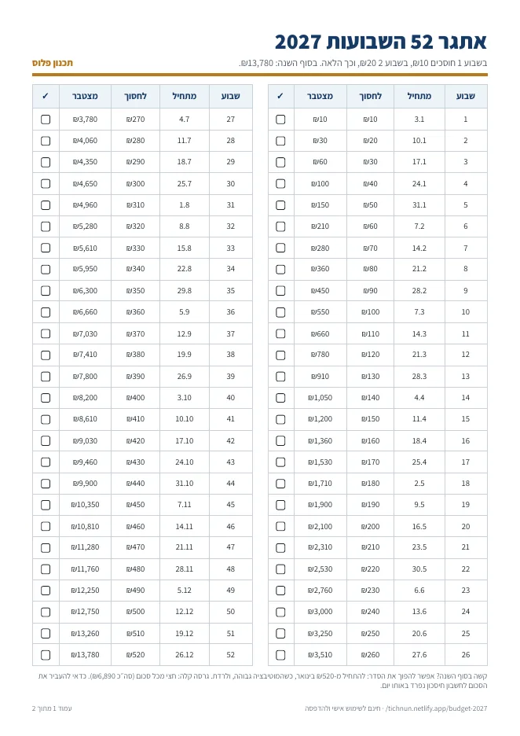

אתגר חיסכון 2027: 52 שבועות + אתגר חודשי
עודכן: 18 בנובמבר 2026 · זמן קריאה: 3 דקות
אתגר חיסכון הוא דרך פשוטה להפוך «צריך לחסוך» למשהו שעושים כל שבוע. ה-PDF כולל שני אתגרים: 52 השבועות עם תאריך התחלה לכל שבוע של 2027, ואתגר חודשי עם הרגל כסף אחד לכל חודש.

אתגר החיסכון 2027: PDF חינם להדפסה
אתגר 52 שבועות (₪13,780 בסוף השנה) ולוח חודשי עם הרגל כסף אחד לכל חודש. A4, 2 עמודים, בלי הרשמה.
הורדת ה-PDF איך זה עובדאתגר 52 השבועות
בשבוע 1 (שמתחיל ביום ראשון, 3 בינואר 2027) חוסכים ₪10, בשבוע 2 ₪20, ובשבוע 52 ₪520. בסוף השנה: ₪13,780. הסכומים בסוף השנה גדולים, ובדצמבר יש גם חנוכה. מי שרוצה יכול להפוך את הסדר: להתחיל מ-₪520 בינואר ולרדת.
האתגר החודשי: הרגל כסף אחד לכל חודש
| חודש | משימת החודש |
|---|---|
| ינואר | עוברים על דפי הבנק והאשראי של דצמבר ובונים תקציב לשנה |
| פברואר | מבטלים מנוי אחד שלא משתמשים בו |
| מרץ | משווים מחירי ביטוח רכב ודירה לפני חידוש |
| אפריל | מתכננים את קניות פסח מראש, עם רשימה ותקציב |
| מאי | שבוע «בלי לקנות בחוץ»: אוכל מהבית |
| יוני | בודקים את דמי הניהול בקרן הפנסיה ובקרן ההשתלמות |
| יולי | קובעים תקציב לחופש הגדול לפני שמזמינים |
| אוגוסט | מפרישים כבר עכשיו לציוד בית הספר ולחגי תשרי |
| ספטמבר | בודקים מסלול סלולר ואינטרנט מול מה שיש בשוק |
| אוקטובר | מוכרים בגדים וחפצים שלא בשימוש |
| נובמבר | בודקים זכאות להחזר מס על השנים האחרונות |
| דצמבר | סיכום שנה: כמה חסכנו, ומה היעד ל-2028 |
במקום לשנות הכול בינואר, משנים דבר אחד בחודש. רבות מהמשימות חוסכות כסף קבוע לכל השנה (מנוי שבוטל, ביטוח שהוזל, מסלול סלולר).
שילוב עם התקציב
הכניסו את החיסכון לתקציב כמו הוצאה קבועה, «משלמים לעצמנו קודם». בדקו כמה זה מהנטו במחשבון 50/30/20, ואם יש יעד ספציפי, במחשבון יעד החיסכון.
תקציב שלם ל-2027
«תקציב משק בית Pro 2027» כולל גיליון יעדי חיסכון עם מעקב חודשי וגרף התקדמות. ₪39.
שאלות נפוצות
כמה חוסכים באתגר 52 השבועות?
₪13,780: בשבוע הראשון ₪10, בשני ₪20 וכן הלאה עד ₪520 בשבוע 52. בגרסה של ₪5 לשבוע (חצי מכל סכום) מגיעים ל-₪6,890.
מה עושים אם מפספסים שבוע?
משלימים בשבוע הבא, או ממשיכים מאיפה שהייתם. אתגר שנמשך 52 שבועות סובל כמה פספוסים.
איפה לשים את הכסף?
בחשבון נפרד מהעו״ש, כדי שלא «ייבלע». יש בנקים עם חשבון חיסכון או פיקדון זמין. השוו תנאים, זה לא ייעוץ השקעות.
צריך להירשם כדי להוריד?
לא. ה-PDF חינמי ופתוח, בלי מייל ובלי הרשמה.